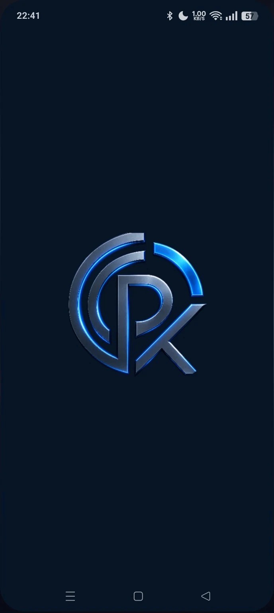
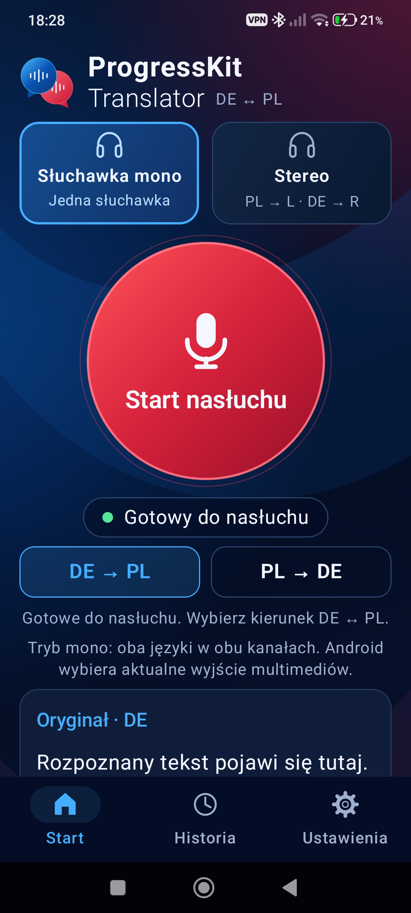
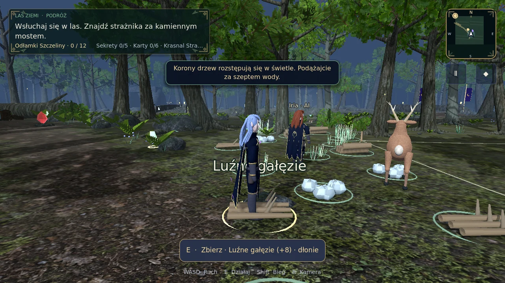
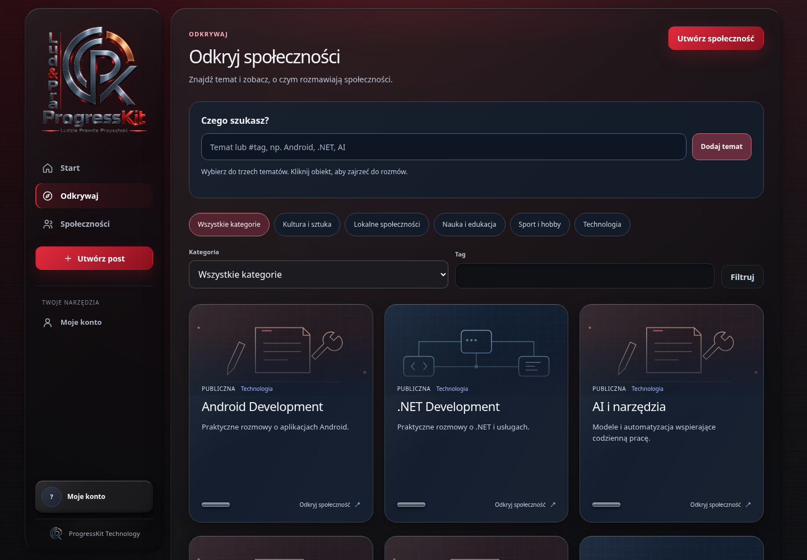
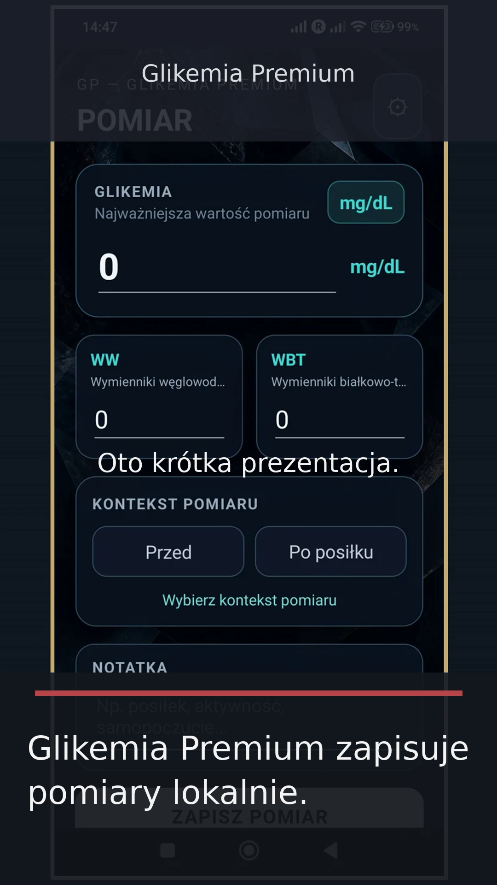
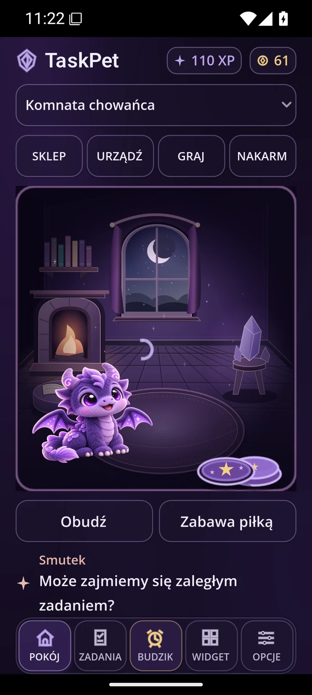

Dziennik glikemii na Androida z lokalną historią, wykresem, filtrami i raportem PDF. Podpisany APK 1.0 jest dostępny bezpośrednio; publikacja sklepowa i końcowe bramki jakości pozostają odrębne.
Dziennik glikemii Android
Odkryj projekt Glikemia Premium
Problem
Pomiary, kontekst posiłku i notatki potrzebują jednego uporządkowanego dziennika, który pozostaje dostępny na telefonie.
Rozwiązanie
Aplikacja .NET MAUI przechowuje pomiary na telefonie, porządkuje historię i tworzy raporty PDF. Nie wymaga własnego backendu danych zdrowotnych i nie zastępuje profesjonalnej porady medycznej.
Dla kogo
Osoby prowadzące własny dziennik glikemii
Potwierdzony zakres
Dodawanie, edycja i usuwanie pomiarów w lokalnej bazie SQLite, z walidacją wartości przed zapisem.
Kontekst pomiaru, WW/WBT i notatka są zapisywane razem z rekordem dziennika.
Historia ma stronicowanie po 50 rekordów, stabilną kolejność daty i ID oraz filtry dnia, tygodnia i miesiąca.
Wykres na ekranie historii przedstawia ostatnie pomiary z aktualnie załadowanego widoku.
Stan i dostęp
Istniejący podpisany APK 1.0 jest plikiem publicznej dystrybucji. W audycie potwierdzono identyczne 80 235 954 B i SHA-256 kopii źródłowej oraz dystrybucyjnej; nie wykonywano nowego builda ani instalacji.
Wieloplatformowy klient pocztowy: Android, Linux i Windows oraz powiązany backend. Kod obejmuje IMAP/SMTP, MIME, foldery, szkice i ochronę danych; każda platforma ma własny zakres odbioru.
Poczta Android, Linux i Windows

Odkryj projekt ProgressKit Mail
Problem
Prywatna poczta wymaga czytelnego interfejsu oraz kontroli nad urządzeniami, danymi dostępowymi i odłączaniem konta.
Rozwiązanie
Android obsługuje rzeczywiste IMAP/SMTP, lokalny cache i powiadomienia FCM. Linux i Windows współdzielą silnik poczty, izolację kont i OAuth, a korzystają z natywnej ochrony systemowej. Backend zarządza dostępem urządzeń i trwałym stanem enrollmentu. Każda platforma ma osobny zakres odbioru i dystrybucji.
Dla kogo
Użytkownicy prywatnej, samodzielnie hostowanej poczty · Operatorzy kontrolujący dostęp urządzeń do skrzynek
Potwierdzony zakres
Android: odczyt IMAP, wysyłanie SMTP, zapis kopii Wysłanych i kontrolowane usuwanie wiadomości.
Android: lokalne widoki folderów, wyszukiwanie, szkice, oznaczenia odczytu i ulubionych oraz odkładanie wiadomości w Room.
Android: odczyt czytelnej treści MIME, tekstu i HTML, także przy części niepoprawnych metadanych wiadomości.
Android: tożsamość urządzenia i chroniony magazyn danych dostępowych wykorzystują mechanizmy Android Keystore.
Stan i dostęp
Istnieją rozwijane klienty Android, Linux i Windows oraz zaplecze. RELEASE_GATE z 11.11.2026 zachowuje klient NO-GO i hosting komercyjny NO-GO.
Tłumacz wypowiedzi i tekstu PL–DE na Androida z rozpoznawaniem mowy, lokalnym przekładem, syntezą głosu i historią. Jakość całego przepływu audio wymaga dalszych prób fizycznych.
Tłumacz rozmów Android

Odkryj projekt ProgressKit Translator
Problem
Krótka rozmowa w dwóch językach wymaga połączenia rozpoznawania, tłumaczenia i odsłuchu w jeden kontrolowany cykl.
Rozwiązanie
Kotlin i Compose łączą sesję rozpoznawania mowy, tłumaczenia i syntezy z kontrolą stanu oraz wyborem dostępnych lokalnych modeli/głosów. Kod uwzględnia ograniczenia routingu Androida; wynik zależy od modeli i rzeczywistego urządzenia.
Dla kogo
Osoby prowadzące naprzemienne rozmowy po polsku i niemiecku
Potwierdzony zakres
Tłumaczenie tekstu i wypowiedzi w kierunkach niemiecki→polski oraz polski→niemiecki przez lokalne modele MLKit.
Sesja nasłuch→tłumaczenie→synteza→odtwarzanie ma jawne stany, tokeny generacji, anulowanie i ograniczone odzyskiwanie po błędach.
Lokalny ASR jest wybierany tylko dla zainstalowanego modelu potwierdzonego przez Android; brak modelu prowadzi do kontrolowanego fallbacku.
Gotowy lokalny głos TTS jest preferowany na podstawie języka i metadanych silnika.
Stan i dostęp
Istnieje lokalny APK 0.2.2 i zapis instalacji aktualizacyjnej na fizycznym Androidzie. Raport rozdziela testy funkcjonalne od niepotwierdzonej latencji, routingu ASR i jakości całego toru audio.
Rozwijana gra fantasy z kartami, tworzeniem EOS, kampanią i eksploracją Earth 3D. Kod obejmuje prolog, misję wejścia do lasu oraz trwały obóz; docelowa jakość artystyczna pozostaje otwarta.
Karty, EOS i eksploracja Earth 3D

Odkryj projekt Vaeloria
Problem
Przygodowy świat, kolekcja stworzeń i walka potrzebują wspólnego postępu oraz oprawy, która mieści się w budżecie telefonu.
Rozwiązanie
Godot/C# łączy menu, karty i tworzenie EOS z kampanią, walką oraz eksploracją. Prolog prowadzi do istniejącej misji i lasu, a obóz zapisuje realne zasoby, wyposażenie i budowle.
Dla kogo
Gracze zainteresowani eksploracją fantasy i taktycznymi pojedynkami · Uczestnicy prywatnych testów rozwijanej gry
Potwierdzony zakres
Menu i rzeczywiste ekrany kolekcji, podglądu oraz ujawniania kart.
Tworzenie EOS i prezentacja postaci w istniejącym modelu stanu gry.
Kampania, drużyna, walka i statusy z rzeczywistym wpływem na stan rozgrywki.
Intro Earth z możliwością pominięcia, kontrolą końca odtwarzania, fallbackiem i misją wejściową.
Stan i dostęp
Udokumentowane lokalne i historycznie publiczne preview Android/Windows; APKdebug/Windows unsigned. Bez deklaracji sklepowego wydania ani finalnego odbioru platform.
Platforma społecznościowa z publikacjami, rozmowami, społecznościami, wyszukiwaniem i obiegiem moderacji. Rozbudowana implementacja lokalna ma historyczne testy; publiczna beta pozostaje osobną bramką.
Platforma społecznościowa — beta

Odkryj projekt ProgressKit Community / Lud&Pra
Problem
Dyskusje potrzebują czytelnych zasad, uzasadnionych decyzji moderacyjnych i możliwości odwołania, a uczestnicy chcą łatwo odnajdywać interesujące społeczności.
Rozwiązanie
Zapewnia wspólny mechanizm członkostwa, widoczności treści i dostępu do mediów oraz jawny lifecycle zgłoszenia moderacyjnego. Discovery pomaga przejść od tematu i fragmentu rzeczywistej rozmowy do społeczności, bez generowania fikcyjnej aktywności.
Dla kogo
Uczestnicy społeczności tematycznych · Twórcy i administratorzy społeczności · Moderatorzy
Potwierdzony zakres
Rejestracja, logowanie, wylogowanie i zarządzanie aktywnymi sesjami konta.
Weryfikacja adresu e-mail, ponowna wysyłka potwierdzenia oraz odzyskiwanie i reset hasła.
Tworzenie i zarządzanie społecznościami, lista własnych grup, widoczność Public/Private/Restricted, członkostwo oraz role administracyjne.
Polityki dołączania, wnioski o członkostwo z akceptacją/odmową oraz zaproszenia z akceptacją, odrzuceniem i anulowaniem.
Stan i dostęp
Platforma i środowiska kwalifikacji istnieją. Publiczna beta pozostaje BLOCKED przez otwarte bramki operacyjne, prawne i obsadę moderacji.
Jeden system dla biura rachunkowego: backend, panel WWW i portal Android. Obejmuje tożsamość i MFA, izolację biur, klientów, sprawy oraz dokumenty; zakres księgowości i bramki produkcyjne pozostają jawnie ograniczone.
Biuro WWW, backend i portal Android
Odkryj projekt ProgressKit Tax
Problem
Biuro rachunkowe potrzebuje wspólnego obiegu klientów, spraw i dokumentów, z kontrolą dostępu oraz rozdzieleniem danych różnych biur.
Rozwiązanie
ASP.NET Core i PostgreSQL obsługują wspólną domenę, autoryzację oraz dokumenty. Panel WWW służy pracy biura, a klient Kotlin/Android daje portal do tego samego systemu.
Dla kogo
Polskie biura rachunkowo-podatkowe · Klienci indywidualni ze sprawami PL/DE/NL · Przedsiębiorcy i reprezentanci spółek
Potwierdzony zakres
Jeden backend dla panelu biura WWW i portalu klienta na Androidzie.
Tożsamość użytkowników, role oraz istniejące mechanizmy MFA i wymaganego zapisania personelu do MFA.
Oddzielenie biur i uprawnień do klientów, spraw oraz dokumentów.
Obsługa klientów i spraw z kontrolą dostępu do powiązanych danych.
Stan i dostęp
Istnieją backend, klient WWW i aplikacja Android jednego systemu. Aktualna macierz kwalifikacji i globalny Security Gate pozostają BLOCKED; brak deklaracji gotowości produkcyjnej.
Wielofirmowy backend dla organizacji opiekuńczych z członkostwem, rolami i kontrolowanym dostępem do podopiecznych. Zaimplementowana logika domenowa i API stanowią fundament produktu operacyjnego.
Backend wielu organizacji
Odkryj projekt Adivara
Problem
Firmy opiekuńcze potrzebują uporządkowania relacji między personelem, koordynatorami, podopiecznymi i rodziną przy zachowaniu odrębności danych organizacji.
Rozwiązanie
Oddziela konto użytkownika od jego członkostwa w organizacji i od uprawnień do konkretnego podopiecznego. Zmiana firmy, roli lub grantu jest sprawdzana na aktualnym stanie bazy, zamiast traktować samo zalogowanie jako prawo do wszystkich danych firmy.
Dla kogo
Firmy opiekuńcze · Koordynatorzy opieki · Opiekunowie i uprawnieni członkowie rodzin
Potwierdzony zakres
Logowanie przez ASP.NET Identity oraz kontrola sesji API z JWT.
Jedno konto może należeć do wielu organizacji; aktywne członkostwo określa kontekst pracy.
Rozdzielony model CompanyMembership z rolą i cyklem członkostwa oraz deklaratywne ograniczanie operacji do ról tenantowych.
Linkowanie i odpinanie profilu opiekuna od członkostwa przez kontrolowane endpointy API.
Stan i dostęp
Źródła backendu i dokumentacja; niepotwierdzona publiczna dystrybucja lub interfejs klienta.
Zaplecze MVP transportowego: interfejs dyspozytora i pasażera, API przewozów oraz eksperymentalne dopasowanie tras. Dane demonstracyjne i niepołączone przepływy wymagają dalszej integracji.
Fundament MVP transportowego
Odkryj projekt GoTrans360
Problem
Ręczne planowanie przewozów i rozproszone dane o trasach, pojazdach i zapotrzebowaniu utrudniają wykorzystanie dostępnych miejsc i ograniczanie pustych przebiegów.
Rozwiązanie
Monorepo rozdziela dwa interfejsy Next.js, API Node.js, modele Prisma i moduł dopasowania. To fundament produktu transportowego, z jawnymi granicami między działającym kodem a demonstracyjnymi ekranami.
Dla kogo
Przewoźnicy · Dyspozytorzy · Docelowo pasażerowie i nadawcy przesyłek
Potwierdzony zakres
Interfejs dyspozytora z ekranami floty, tras i dopasowania; dane operacyjne tych widoków są demonstracyjne.
Formularz wyszukiwania i rezerwacji pasażera; obecny frontend nie realizuje rezerwacji przez backend.
Sesja cookie i role w aplikacji dyspozytora oraz weryfikacja tokenu w osobnym API.
Endpointy przejazdów, pojazdów i przewoźników oraz modele Prisma; integracja z frontendami pozostaje otwarta.
Stan i dostęp
Lokalne repozytorium i historyczne buildy; brak potwierdzonego wdrożenia.
Autorska witryna salonu stylizacji paznokci: rzeczywiste realizacje, opis usług i lokalny kreator wiadomości o terminie.
Witryna usługowa
Odkryj projekt Ignira
Problem
Osoba zainteresowana stylizacją potrzebuje zobaczyć wykonane prace i przekazać pomysł oraz preferowany termin w jednym miejscu.
Rozwiązanie
Statyczna witryna HTML/CSS/Java Script prowadzi od prac i informacji o usłudze do gotowej wiadomości. Formularz przygotowuje tekst w przeglądarce; nie rezerwuje terminu automatycznie.
Dla kogo
Klientki stylistki paznokci · Lokalne marki usługowe
Potwierdzony zakres
Autorska prezentacja usług stylizacji paznokci, podejścia do pracy i higieny.
Galeria pięciu rzeczywistych realizacji z opisami alternatywnymi i odroczonym ładowaniem.
Lokalny formularz układający wiadomość o terminie i inspiracji; podgląd i kopiowanie do schowka.
Kontakt przez linki społecznościowe; bezpośredni adres Messenger wymaga konfiguracji.
Stan i dostęp
Brak nowego potwierdzenia aktualnej publicznej dystrybucji.
Literacki serwis autorski łączący publikacje, archiwum i narracyjne podstrony. Zakres potwierdzono w aktualnym publicznym repozytorium.
Serwis autorski
Odkryj projekt Obserwator
Problem
Czytelnik potrzebuje uporządkowanego miejsca, w którym znajdzie twórczość autora i materiały do pobrania.
Rozwiązanie
Statyczny serwis HTML/CSS/Java Script prezentuje treści autorskie oraz odsyła do publikacji i usług zewnętrznych. Mechanizm ukrywania treści po stronie przeglądarki nie jest bezpiecznym systemem autoryzacji.
Dla kogo
Czytelnicy · Autorzy i twórcy
Potwierdzony zakres
Literacka strona autorska z wyróżnionymi publikacjami i linkami do materiałów PDF.
Osobne tematyczne podstrony archiwum, raportu i Bielika z autorską typografią i animacją tekstu.
Odsyłacze do zewnętrznego formularza nadsyłania treści i zakupu publikacji.
Stan i dostęp
Zachowano wcześniejszy opis realizacji i publicznych źródeł. Lokalnego checkoutu produktu ani bieżącego wdrożenia nie potwierdzono w tym audycie.
Historyczna realizacja związana z organizacją pracy kontrolerów i raportowaniem przejazdów. Zachował się opis portfolio; brak kodu produktu do niezależnego audytu.
Realizacja historyczna — kod nieodnaleziony
Odkryj projekt KAN SYSTEM
Problem
Praca kontrolerów wymaga uporządkowanego zbierania informacji i przygotowania raportów.
Rozwiązanie
Historia portfolio dokumentuje zmianę nazwy RWR na KAN SYSTEM i cel systemu. Brak źródeł aplikacji nie pozwala ustalić dzisiejszej implementacji, technologii ani produkcyjnego działania.
Dla kogo
Zespoły kontrolerów biletów · Osoby rozliczające pracę zespołów
Potwierdzony zakres
Zakres nie został potwierdzony w dostępnych źródłach.
Stan i dostęp
Brak nowego potwierdzenia aktualnej publicznej dystrybucji.
Katalog produktów i realizacji z pełnymi prezentacjami, wyszukiwaniem i showroomem Three.js. Wspólny model danych zasila karty, podstrony i technologie, a aktualne zmiany wizualne wymagają odbioru.
Portfolio i showroom 3D
Odkryj projekt ProgressKit Systems
Problem
Produkty zmieniają się szybciej niż ręcznie utrzymywane prezentacje. Opisy i statusy wymagają jednego punktu aktualizacji.
Rozwiązanie
Oddziela źródłowe informacje o produktach od szablonów prezentacji. Ten sam katalog zasila case studies, technologie, filtrowanie i showroom; przeglądanie pozostaje dostępne w HTML, a rozbudowane 3D jest dodatkową warstwą obsługi i oprawy.
Dla kogo
Użytkownicy i odbiorcy ekosystemu ProgressKit
Potwierdzony zakres
Walidowany katalog JSON przechowuje tożsamości, opisy, funkcje, status, dostępność, źródła i analizy realizacji zamiast ręcznie powielanych kart.
Generator Python tworzy indeks katalogu i osobne adresy case studies z problemem, rozwiązaniem, architekturą, funkcjami, galerią i dalszym rozwojem.
Wyszukiwanie, kategorie, technologie i etap produktu mają stan w URL, obsługę powrotu historii i bezpośredni wybór projektu.
Treść stron jest prerenderowana. Filtry wymagają Java Script, ale lista projektów i pełne podstrony pozostają dostępne jako statyczny HTML.
Stan i dostęp
Lokalny kandydat portfolio. Bieżące zmiany katalogu i wyglądu wymagają regresji, odbioru wizualnego oraz potwierdzenia publicznego wdrożenia.
Wewnętrzna analityka witryny, licznik ukończonych pobrań i moderowane opinie. Mały backend służy własnemu ekosystemowi ProgressKit i nie jest komercyjną platformą analityczną.
Własna analityka
Odkryj projekt ProgressKit Analytics
Problem
Rozwój portfolio wymaga informacji o wykorzystaniu strony bez dokładania zewnętrznego trackera i identyfikatorów urządzeń.
Rozwiązanie
Dostarcza podstawowe informacje o użyciu witryny i dystrybucji APK bez wprowadzania identyfikatora odwiedzającego. Oddziela zdarzenia strony od bazy produktu oraz od publicznie wyświetlanej kolejki zatwierdzonych opinii.
Dla kogo
Użytkownicy i odbiorcy ekosystemu ProgressKit
Potwierdzony zakres
Zbieranie zdefiniowanych zdarzeń witryny: odsłon, kontaktów, otwarć projektu i przejść do zewnętrznych stron.
Osobna baza SQLite przechowuje zdarzenia i umożliwia agregację według czasu i źródła kampanii.
Własny frontend respektuje Do Not Track i ogranicza metadane zdarzeń; treść briefu i zapytań wyszukiwania nie jest dołączana do zdarzenia.
Wewnętrzne podsumowania pokazują aktywność w wybranych oknach czasu i źródła kampanii.
Stan i dostęp
Kod i kontener do samodzielnego wdrożenia; nie potwierdzono bieżącego publicznego wydania i danych produkcyjnych.
Narzędzia przygotowania publicznych wydań, lokalnego podglądu oraz konfiguracje współpracy witryny z backendem. Dokumentacja oddziela kontrolę artefaktów od potwierdzonego działania serwera.
Zaplecze wydania i usług
Odkryj projekt Zaplecze ProgressKit
Problem
Aplikacje, API i dystrybucja plików muszą współpracować, zachowując dane i możliwość wycofania zmiany.
Rozwiązanie
Rozdziela publikowaną stronę, proces API, plik dystrybucji i trwałe dane. Przygotowanie wydania wiąże manifest i hashe ze źródłami, a procedura wycofania kodu zachowuje nowsze dane zamiast nadpisywać je starym backupem.
Dla kogo
Użytkownicy i odbiorcy ekosystemu ProgressKit
Potwierdzony zakres
Konfiguracje kontenera backendu i trwałych danych oddzielają proces aplikacji od publicznego wydania strony.
Fragmenty konfiguracji reverse proxy rozdzielają publiczną witrynę, API i materiały wewnętrzne.
Przygotowano reguły nagłówków i logowania dla dystrybucji produktu; obecność konfiguracji nie dowodzi jej aktywacji na serwerze.
Lokalny podgląd korzysta z tej samej jawnej listy publicznych plików co wydanie.
Stan i dostęp
Artefakty statyczne i konfiguracje do wdrożenia; zaplecze nie jest osobnym produktem komercyjnym.
Lokalna aplikacja desktopowa do nagrywania lekcji, porządkowania sesji i eksportu TXT. Kod obejmuje historię SQLite, odzyskiwanie audio i adaptery AI; pełny przepływ Windows nie został odebrany.
Aplikacja desktopowa
Odkryj projekt ProgressKit Notes
Problem
Po zajęciach odtwarzanych na komputerze trudno odnaleźć najważniejsze fragmenty i zachować uporządkowane notatki bez przekazywania nagrania do usługi chmurowej.
Rozwiązanie
Jedna aplikacja łączy jawnie uruchamiane nagrywanie wybranego wyjścia audio, sesje SQLite, edycję metadanych i notatek oraz eksport TXT. Adaptery Whisper i llama.cpp przygotowują transkrypcję i notatkę po dostarczeniu lokalnych silników i modeli; rzeczywista inferencja nie została odebrana.
Dla kogo
Osoby uczące się z nagrań i zajęć online · Użytkownicy Windows potrzebujący lokalnego archiwum lekcji
Potwierdzony zakres
Wybór wyjścia WASAPI, nagrywanie audio systemowego, pauza, wznowienie i wskaźnik poziomu; ścieżka nie otwiera mikrofonu.
Segmenty WAV z manifestem sesji, checkpointami i kodem odzyskiwania po przerwaniu procesu.
Historia SQLite z kursami i lekcjami, wyszukiwaniem, filtrem kursu oraz edycją tematu, nazwy, uwag i treści notatki.
Import lokalnego audio i ponowne generowanie notatki z zachowanych segmentów lub transkryptu.
Stan i dostęp
Źródła i istniejące wcześniejsze DLL testowe są dostępne; raport 04.11.2026 nie potwierdza świeżego publishu, instalatora Windows ani rzeczywistej inferencji lokalnego AI.
C# / .NET 10 / Avalonia 11.3.22 / NAudio 3.3.0 / WASAPI / Microsoft.Data.Sqlite 10.0.14 / whisper.cpp — adapter / llama.cpp — adapter / Whisper small i Qwen3 1.7B — manifesty modeli / NSIS — źródło instalatora
Lokalny komunikator Android–Android przez Bluetooth Classic/RFCOMM: tekst, trwała kolejka, zgoda obu stron i potwierdzenie dostarczenia ACK. Istnieje debug APK 0.1.0; fizyczny transfer między telefonami nie został odebrany.
Komunikator Bluetooth Android
Odkryj projekt ProgressKit OffGrid
Problem
Dwie osoby potrzebują wymienić krótkie wiadomości bez Internetu i serwera, z jasnym rozróżnieniem zapisu, wysłania i dostarczenia.
Rozwiązanie
Natywna aplikacja Kotlin korzysta z bezpiecznego RFCOMM i systemowego parowania Bluetooth. Własny protokół obsługuje zgodę sesji, zapis przed ACK, deduplikację i ograniczone ponawianie.
Dla kogo
Osoby testujące lokalną wymianę tekstu między dwoma telefonami Android
Potwierdzony zakres
Bezpośredni tekst przez Bluetooth Classic/RFCOMM bez konta, serwera i Internetu.
Systemowe parowanie urządzeń oraz osobna zgoda obu stron na konkretną sesję aplikacji.
Trwała historia, kolejka i identyfikatory wiadomości zachowywane po restarcie procesu.
Rozróżnienie oczekuje, wysłano i dostarczono; ACK dopiero po trwałym zapisie odbiorcy.
Stan i dostęp
Istnieje lokalny debug APK 0.1.0 oraz źródła. Raport z 15.11.2026 zawiera 38 testów JVM i 7 testów emulatora; prawdziwy transfer dwóch telefonów pozostaje NOT RUN.
Wewnętrzne narzędzie do pionowych filmów: lokalny panel, planowanie scen, synteza głosu, napisy i render FFmpeg. Rzeczywisty lokalny E2E jest udokumentowany; użyty głos ma nierozstrzygnięte prawa komercyjne.
Lokalny pipeline wideo

Odkryj projekt ProgressKit Reel Agent
Problem
Przygotowanie krótkiego filmu z własnych materiałów wymaga powtarzalnego łączenia scenariusza, lektora, napisów i eksportu.
Rozwiązanie
Panel Fast API zapisuje zadania w SQLite i uruchamia jednego pracownika. Lokalna Ollama wybiera zatwierdzone frazy i plan scen, Piper tworzy WAV, a FFmpeg renderuje film z kontrolą metadanych i próbek scen. Narzędzie nie publikuje automatycznie materiałów.
Dla kogo
Wewnętrzna produkcja materiałów ProgressKit · Operator lokalnego pipeline wideo
Potwierdzony zakres
Lokalny panel i REST: tworzenie zadań, historia, etapy, logi, anulowanie, retry oraz podgląd i pobieranie ukończonego eksportu.
Trwała kolejka SQLite WAL z historią zdarzeń i przywracaniem stanu po restarcie; retry tworzy nową kopię zadania.
Import własnych obrazów i filmów oraz opcjonalnego podkładu; walidacja typów, rozmiarów, ścieżek i metadanych mediów.
Planowanie przez lokalny model Ollama z walidacją dozwolonych faktów, mediów i czasu. Ograniczony planista Qwen3 wybiera gotowe zatwierdzone frazy; fallback do szablonu jest jawnie oznaczony.
Stan i dostęp
Narzędzie wewnętrzne. Film i głos pozostają lokalnymi próbami technicznymi.
Wewnętrzna integracja zdalnej pomocy oparta na Aspia: pakiety próbne, infrastruktura Router/Relay i przygotowanie ograniczonego Hosta. Pełna sesja Windows–Linux pozostaje nieodebrana.
Klient Linux i integracja zdalnej pomocy
Odkryj projekt ProgressKit Remote
Problem
Zdalna pomoc wymaga powtarzalnego pakowania natywnego klienta i Hosta oraz jawnego odbioru lokalnej zgody, uprawnień i rozłączenia.
Rozwiązanie
Projekt integruje upstream Aspia i własne skrypty pakowania, kontroli integralności i publicznego profilu połączenia. Rozwijana poprawka źródłowa ogranicza kanały i import ustawień; testy przenośnej polityki nie zastępują kompilacji Windows ani sesji fizycznej.
Dla kogo
Wewnętrzny operator pomocy technicznej ProgressKit
Potwierdzony zakres
Próbne pakiety Linux i Windows integrują natywnego klienta oraz Hosta Aspia, z kontrolą pochodzenia i integralności.
Generator profilu połączenia przyjmuje wyłącznie publiczne ustawienia; nie umieszcza danych dostępowych operatora w pakiecie.
Przygotowane procedury Routera i Relaya mają historyczny raport stanu usług. Działający proces nie potwierdza sesji pulpitu.
Przygotowana poprawka źródłowa Hosta ogranicza zakres zdalnej sesji i wymaga osobnej kompilacji oraz odbioru Windows.
Stan i dostęp
Istnieje lokalny klient Linux 0.3.0 i starsze pakiety próbne Aspia. Ograniczony Host Windows oraz pełna rzeczywista sesja pozostają nieodebrane.
Demonstrator challenge-response Android–Linux z biometrią i podpisem kluczem AndroidKeyStore. Transport ADB służy wyłącznie programowaniu; projekt nie jest jeszcze gotowym magazynem danych ani systemem parowania.
Demonstrator klucza Android
Odkryj projekt ProgressKit Vault Key
Problem
Sprawdzenie możliwości zatwierdzania kryptograficznego wyzwania na telefonie przed projektowaniem właściwego procesu zaufanego parowania.
Rozwiązanie
Klient Python generuje losowe wyzwanie, przekazuje je przez ADB, a aplikacja Android prosi o silną biometrię i podpisuje je kluczem EC z Android Key Store. OpenSSL weryfikuje wynik; nie jest to gotowy magazyn ani system odblokowywania dokumentów.
Dla kogo
Wewnętrzne eksperymenty ProgressKit z uwierzytelnianiem urządzeń
Potwierdzony zakres
Kod generowania EC P-256 w Android Key Store z wymogiem silnej biometrii przy podpisie i unieważnianiem po zmianie zestawu biometrii.
Systemowy Biometric Prompt z Crypto Object; ścieżka przyjęcia wyzwania jest blokowana poza buildem DEBUG.
Klient Python generuje challenge 256-bit, pobiera publiczny wynik przez developerskie ADB/run-as i weryfikuje SHA256 with ECDSA za pomocą OpenSSL.
Przygotowane negatywne próby innego/zmienionego wyzwania i zmienionego podpisu oraz scenariusz anulowania; brak odnalezionego raportu ich fizycznego wykonania.
Wstrzymana gra logiczna Puzzle First z mechaniką match-3. Lokalny preview 0.10.0 Alpha obejmuje sześć krain i 600 poziomów głównych; nie jest publicznym wydaniem.
Match-3 Alpha — prace wstrzymane
Odkryj projekt ECHO WORLDS
Problem
Zapewnić przemyślaną podróż match-3 z różnymi krainami, celami i stopniowym odkrywaniem kampanii.
Rozwiązanie
Godot prowadzi kampanię match-3 z ograniczoną liczbą ruchów, celami planszy i zapisem progresji. Oddzielne ekrany zwycięstwa i porażki pokazują wynik próby.
Dla kogo
Osoby zainteresowane rozwijanymi grami ProgressKit na Androida
Potwierdzony zakres
Mechanika match-3: zamiana sąsiednich elementów, dopasowania, cele planszy i ograniczona liczba ruchów.
Sześć krain po 100 poziomów głównych i atlas 60 lokacji; próby poboczne pozostają osobno.
Sekwencja Puzzle First prowadzi przez wybór próby, rozgrywkę i odrębne ekrany zwycięstwa lub porażki.
Lokalny zapis progresji, ukończeń, gwiazdek, aktywnej planszy i ekwipunku.
Stan i dostęp
Kod i lokalny APK preview 0.10.0 Alpha istnieją. Prace są wstrzymane; brak potwierdzonego publicznego wydania.
Organizer osobisty i gra z wirtualnym zwierzakiem: zadania, rozwój chowańca, pokój, meble i minigra. Istnieje podpisany prywatny OWNER 17; przyszły PUBLIC nie został wydany.
Organizer i gra z chowańcem

Odkryj projekt ProgressKit TaskPet
Problem
Codzienne zadania potrzebują czytelnego organizera i motywacji, która zachowuje postęp oraz nie myli zabawy z wykonaniem zadania.
Rozwiązanie
Godot prezentuje pokój i organizer, a istniejący moduł Kotlin przechowuje autorytatywny stan, obsługuje przypomnienia, budzik i widżety. Lokalny postęp nie wymaga konta.
Dla kogo
Osoby zainteresowane rozwijanymi grami ProgressKit na Androida
Potwierdzony zakres
Sześć gatunków chowańca; wykluwanie po 100 XP, reakcje i kosmetyczna aura zachowują istniejący postęp.
Pokój z wyposażeniem, ustawianiem mebli, warstwami, odbiciem, cofnięciem ustawienia i trwałym zapisem.
Zadania jednorazowe i cykliczne z terminami; wykonanie przyznaje XP i monety jednokrotnie.
Lokalne przypomnienia oraz istniejący natywny budzik z harmonogramami, powiadomieniami i uprawnieniami Androida.
Stan i dostęp
Istnieje prywatny OWNER 0.9.3-owner.17 na Androida. APK i dostęp OWNER nie są udostępniane w portfolio. PUBLIC i Google Play pozostają w przygotowaniu.
Przegląd katalogu: 2026-11-25. Etap i dostępność opisano osobno.
ROZWÓJ I AKTUALNOŚĆ
Stan prac.
Daty odnoszą się do sprawdzonych źródeł. Wynik lokalnego testu nie potwierdza aktualnego wdrożenia.
Glikemia Premium
Dziennik glikemii Android
Istniejący podpisany APK 1.0 jest plikiem publicznej dystrybucji. W audycie potwierdzono identyczne 80 235 954 B i SHA-256 kopii źródłowej oraz dystrybucyjnej; nie wykonywano nowego builda ani instalacji.
Istnieje lokalny APK 0.2.2 i zapis instalacji aktualizacyjnej na fizycznym Androidzie. Raport rozdziela testy funkcjonalne od niepotwierdzonej latencji, routingu ASR i jakości całego toru audio.
Udokumentowane lokalne i historycznie publiczne preview Android/Windows; APKdebug/Windows unsigned. Bez deklaracji sklepowego wydania ani finalnego odbioru platform.
Istnieją backend, klient WWW i aplikacja Android jednego systemu. Aktualna macierz kwalifikacji i globalny Security Gate pozostają BLOCKED; brak deklaracji gotowości produkcyjnej.
Źródła i istniejące wcześniejsze DLL testowe są dostępne; raport 04.11.2026 nie potwierdza świeżego publishu, instalatora Windows ani rzeczywistej inferencji lokalnego AI.
Istnieje lokalny debug APK 0.1.0 oraz źródła. Raport z 15.11.2026 zawiera 38 testów JVM i 7 testów emulatora; prawdziwy transfer dwóch telefonów pozostaje NOT RUN.
Istnieje prywatny OWNER 0.9.3-owner.17 na Androida. APK i dostęp OWNER nie są udostępniane w portfolio. PUBLIC i Google Play pozostają w przygotowaniu.